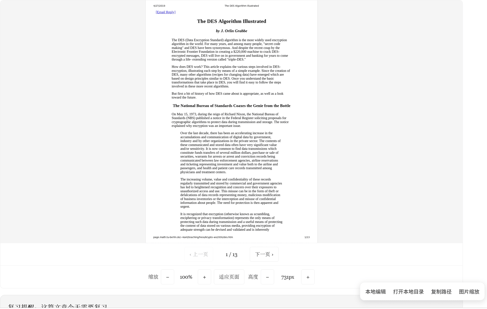
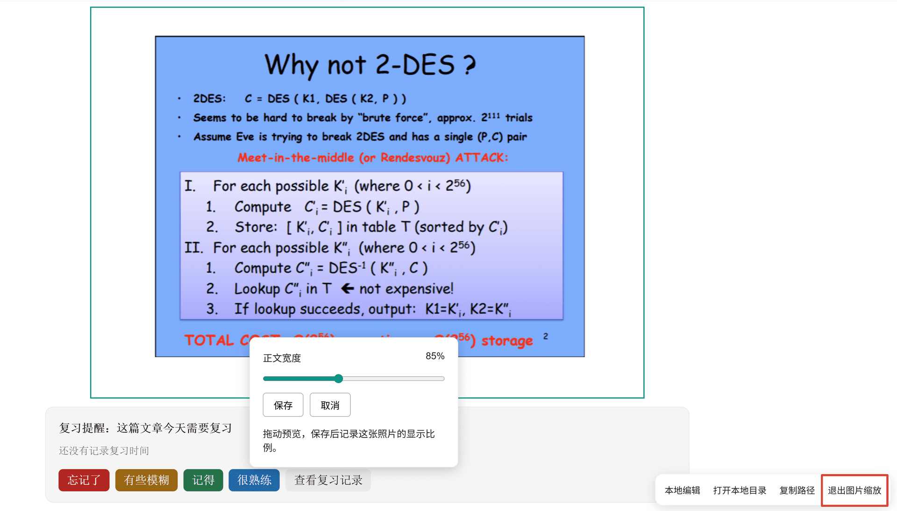

多媒体处理规则
这个直接在网页上挂载即可。
页面展示
如下图所示：

原理
其实核心是用 PDF.js 把 PDF 的当前页画到网页上，再由我们自己的控件管理翻页、缩放和高度。
具体分为几步：
-
转换脚本生成 PDF 入口
页面最初包含一个带embedded-pdf标记的 iframe，里面记录 PDF 地址。pdf-inline.js找到它后，会替换成自定义阅读框。 -
PDF.js 读取并解析文件
使用项目里自带的 PDF.js 加载 PDF，获取总页数和每页尺寸。解析工作通过 Web Worker 分担，减少对页面交互的影响。 -
只显示当前页
PDF.js 将当前页绘制到<canvas>。上面再叠加一个透明文字层，让文字可以选择、复制。点击左右按钮时，取消旧页面的绘制，再渲染目标页。 -
计算显示大小
按规定好的比例，把整页放进阅读框。
布局由 extra.css 控制。窗口尺寸变化时，ResizeObserver 会触发重新计算和绘制；翻页时则保留当前高度和缩放比例。
PPT/Word
在 UpdateBlog 的时候，就把 PPT/Word 转为同目录下的 PDF 文件，也就是在原始目录里会有同名的 PDF 文件（一开始我有强迫症，没这么做，但想想没必要吹毛求疵）。
done/系统性知识/Operating-System/操作系统概述.docx
done/系统性知识/Operating-System/操作系统概述.pdf
页面展示
只展示 PDF 即可，显示效果和上文的 PDF 一样。其实还有一个小细节：我在本地服务站点上有本地编辑功能，它指向原始资源文件。这个细节琐碎，但很简单。
持续维护方式
需要维护一个字典，方便原始文件被修改后重新转换为 PDF，也用来防止重复转换。
Key: 原始文件名
Value: 原始文件修改时间
一种情况：如果添加了某个文件，旁边已经有对应的 PDF，而这个文件不在字典里，脚本会报错。脚本另外提供 --overwrite 选项。
对原始文件的要求
- 添加这种新的资源文件时，尽量避免添加自行转换的 PDF 文件。
- 删除原始资源文件的时候，把对应的 PDF 文件也删掉。
Images
页面展示
一般情况下，页面上就是显示一张图片。比较特殊的是，在本地服务站点里，我可以点击图片调整大小。此时会弹出一个窗口，让我选择比例。

持续维护方式
如果不涉及图片大小调整，那么没有任何脚本维护，直接显示图片即可。下面讨论涉及图片大小调整的情况。这个功能要分两种讨论。
第一种是 Markdown 文件中引用图片。此时有一个自定义标记 #wXX，表示宽度为正文的 XX%：

如果没有这个标记，图片就按默认方式显示，宽度不超过正文。因此缩放之后，按这个格式改原文里的这个标记即可。核心是网页上调整之后，怎样把修改写回原文。
思路是直接在原文里搜索图片路径，并记下是第几次出现，因为一篇文章可能多次引用同一张图片。
第二种是原始文件就是图片。这种文件能在网页上显示，是因为先转成了 Markdown，再用 mkdocs 转成 HTML：
# 图片标题

改显示比例的方式和上面一样，但重点是缩放值记在哪里。第一种不用另记，因为比例已经写进原始 Markdown。第二种写进的是转换后的 Markdown，所以要另维护一份 image_display.json，记录每张图片的缩放值。
{
"系统性知识/computer-network/02.datalink_layer/02.以太网/04_以太网csmacd-说明.png": {
"hash": "dd7912f36b4651d5cdd1ca2787d75f91515542096364dce6d9d216e2326cc572",
"mtime_ns": 1694318621054589700,
"width_percent": 70
}
}
为什么要这样？ 有如下情况：
-
假设图片被修改了，但是路径没动。此时发现
hash不一致，就更新hash和mtime_ns，width_percent保留。 -
假设路径换了，但是图片没改。登记表里没有这条新路径，就算出
hash，再在登记表里找有没有相同的hash。如果有，就把记录改到新路径上，并带上原来的hash、mtime_ns和width_percent。 -
假设图片被修改了，并且路径也换了，那就找不到原来的
width_percent。这样我也认了，毕竟图片修改的概率太低，比例也不是特别关键，大不了下次在网页上看到的时候再缩放一下。 -
最后还要遍历登记表，看看路径是否还存在。不存在就删掉这条记录。
其实说实话，上面的维护方式太复杂了。最简单的方式就是存储路径和缩放比例的映射。如果改名或者路径修改了，无所谓，因为缩放比例并不是特别关键的信息。但毕竟都已经实现了，就按照这样的方式维护吧。
HTML
Videos
当前方案为 ArtPlayer 5.4.0 + 浏览器原生 video 解码 + 独立 SRT + 按需生成的 VTT。
字幕
以下为示例结构。<任务ID> 和 <内容Hash> 表示计算所得的目录或文件名，后面会详细解释：
D:\Blog\
├─ done\
│ └─ 课程\
│ ├─ 01.介绍.mp4
│ ├─ 02.原理.mp4
│ └─ subtitles\
│ ├─ 01.介绍.mp4.srt
│ ├─ 01.介绍.mp4.en.srt
│ └─ 02.原理.mp4.srt
├─ .local\
│ └─ video-subtitle-jobs\
│ ├─ worker.lock
│ ├─ active.json
│ └─ <任务ID>\
│ ├─ state.json
│ ├─ task.json
│ ├─ transcript.json
│ ├─ 01.介绍.srt
│ └─ worker.log
└─ .cache\
└─ video-subtitles\
└─ <内容Hash>.vtt
srt
字幕生成用的是独立的项目，其实很简单，就是提取音频，然后云端处理，用的是阿里千问。但更关键的是下面几个设计：
字幕生成时机：博客采用手动点击生成，而不是自动生成。也就是在对应视频的网页上，有一个选择生成字幕的按钮。想法是没必要给所有视频自动生成，真正需要某个视频时再生成即可。
字幕位置：字幕放在 subtitles 子目录下，这样更清晰。但 PotPlayer 等本地播放器一般加载的是同目录字幕，所以可以在播放器设置里把字幕搜索路径加上 subtitles 目录，这样应该也能自动加载。
一个持久化风险：视频改名后，如果 srt 没有一起改名，就找不到了。
vtt
VTT 是网页播放器需要的字幕格式。从 srt 转到 vtt 的具体规则就不说了，让 AI 几秒的事情。重点在于怎样维护 VTT。
答案是不维护。VTT 直接用 SRT 内容 的 HASH 来命名：
# 视频 → 按命名找到 SRT → 读取 SRT 字节 → SHA-256 → 对应缓存 VTT
data = choices[index].read_bytes()
revision = hashlib.sha256(data).hexdigest()
cache = blog_root / '.cache' / 'video-subtitles' / (revision + '.vtt')
因为按内容命名，srt 一改，vtt 也会更新。路径放在 .cache/video-subtitles/ 目录下，这样方便管理。而且可以直接删，真正宝贵的是 srt（其实也不宝贵）。
jobs
这个任务 ID 是本地算出来的，放在 .local/video-subtitle-jobs/ 目录下，便于以后万一用到。云端返回的信息记在该目录的 task.json 里。
计算规则如下。这些 jobs 留着只是为了万一以后用到，所以没有专门再弄一个文件来维护这个 ID。实在需要的话，按下面的规则重新生成即可：
视频绝对路径 + 文件大小 + 纳秒修改时间
↓
JSON 序列化后计算 SHA-256
↓
取前 24 位作为任务目录名
你要硬说万一改名了怎么办，那我也没辙，反正这玩意大不了重新生成。
持续维护方式
正如上面所说，不维护，直接用 SRT 内容 的 HASH 来命名。原因有两点：
- 字幕不是什么宝贵的东西，大不了重新生成。
- 字幕不是什么大文件，可以快速地读完内容再计算 HASH。
这里体现了软件设计的魅力，没有必要吹毛求疵。不同重要程度的资源，维护方式也不一样。
速度控制
其实用的都是 ArtPlayer 支持的特性。比如把倍速步长改成 0.1（默认是 1.0、1.25、1.5），设置如下：
{
html: "播放速度",
tooltip: "1.0×",
range: [1, 0.5, 3, 0.1],
onChange(item) {
this.playbackRate = Math.round(item.range[0] * 10) / 10;
return `${this.playbackRate.toFixed(1)}×`;
}
}
range 四个值依次是当前值、最小值、最大值和步长。可以选择 1.1、1.2、1.3 等速度，范围目前固定为 0.5～3.0。
还有一个比较好的设计：长按方向键就会 3 倍加速。按下后加上一个定时器，松开后再按按住的时间处理。整个过程都在前端，不需要请求后端。改播放速度就是修改 playbackRate。
浏览器硬件加速
刚开始遇到 Edge 视频卡顿，最后发现要打开硬解。当时也 Debug 了一会儿，特此记录：
- 打开
edge://flags/#use-angle，将 Choose ANGLE graphics backend 改为 Default - 点击重启，重新播放同一视频
- 复查
edge://gpu的GL_RENDERER是否恢复真实显卡，以及edge://media-internals是否使用D3D11VideoDecoder等硬解路径；同时比较卡顿是否消失
笔记
直接看 视频时间点笔记功能实现总结。